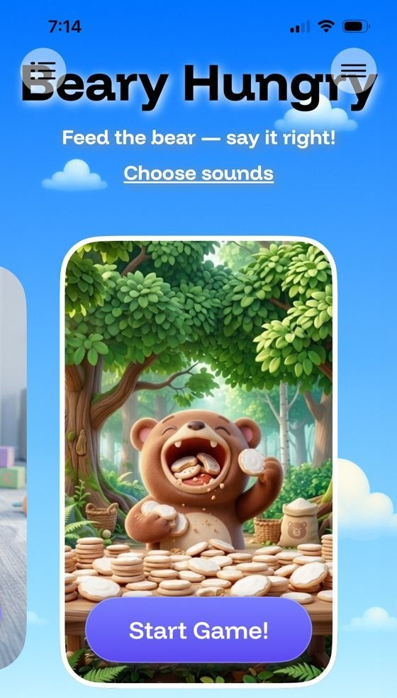

Research-backed speech practice
for Australia’s Thriving Kids families
Australia is changing how it supports young children with developmental delay. SpeechLP, an iPhone, iPad, and web app built by practising speech-language pathologists, can help families practise speech sounds between sessions, and we want to strengthen its evidence with Australian research partners.
The opportunity: Thriving Kids
From 1 October 2026, children aged 8 and under with developmental delay or autism and low to moderate support needs began accessing support through Thriving Kids, a new program outside the NDIS. It will be fully rolled out by 1 January 2028.1
- No formal diagnosis needed. Eligibility is based on a functional assessment of the child’s needs.2
- Speech pathology is a targeted support, delivered as group or one-on-one allied health services after a light-touch needs assessment.2
- Entry points include online directories and Thriving Kids-aligned health professionals.3
- Not an individual funding package. Supports are delivered through services, not portable funding.4
Why home practice matters here
Speech sound disorders are common in early childhood and are linked to later literacy difficulties. Progress depends on frequent practice, but therapy time is limited and home practice is rarely measured. Much of the research on intervention intensity and parent involvement comes from Australian researchers, including McLeod, Baker, Sugden, and Williams. With targeted supports in place of individual funding packages, structured home practice between sessions could play a larger role.
What SpeechLP offers
- Age-based screeners for ages 3–9 (about 15 words each), sampling sounds in initial, medial, and final positions.
- Video lessons in which two certified SLPs model each sound and the child practises it.
- Speaking games on iPhone, iPad, or the web, drawing on 1,500+ words across all 24 English consonants, with a spoken model of every word.
- Word preview before each game: the target sound and words, each with a button to hear it.
- Automated speech recognition feedback on every word; SpeechLP never receives any audio.
- SpeechTherapist.app lets clinicians invite a caregiver, assign home practice, and track accuracy by sound.


Evidence so far, and what we are building
In a retrospective study of 101 returning children, app-scored accuracy on the same sounds rose from 69.4% to 74.9% across two months (+5.5 percentage points, 95% CI 0.4 to 10.4).5 The scoring is not yet validated against SLP ratings and there was no comparison group, so this is a starting point, not proof of effectiveness. Our next study validates the app’s scoring against several SLP raters, and its results will guide fine-tuning of our speech recognition model.
What Australia would need
- Australian English adaptation of word lists and speech recognition, which an Australian validation study would test directly.
- Compliance with the Privacy Act 1988 and Australian Privacy Principles.
- Fit with Thriving Kids pathways, such as listing in provider directories and use by aligned speech pathologists.
alissa@speechlp.com · speechlp.com